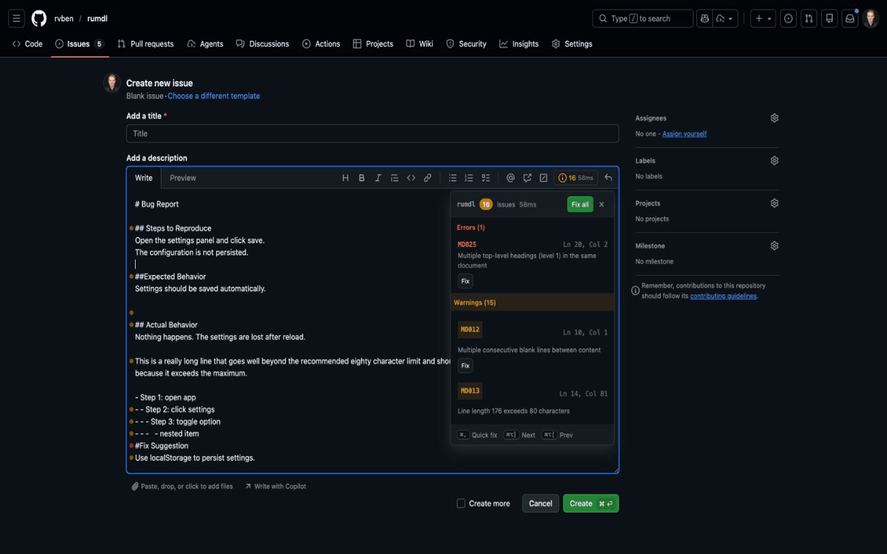
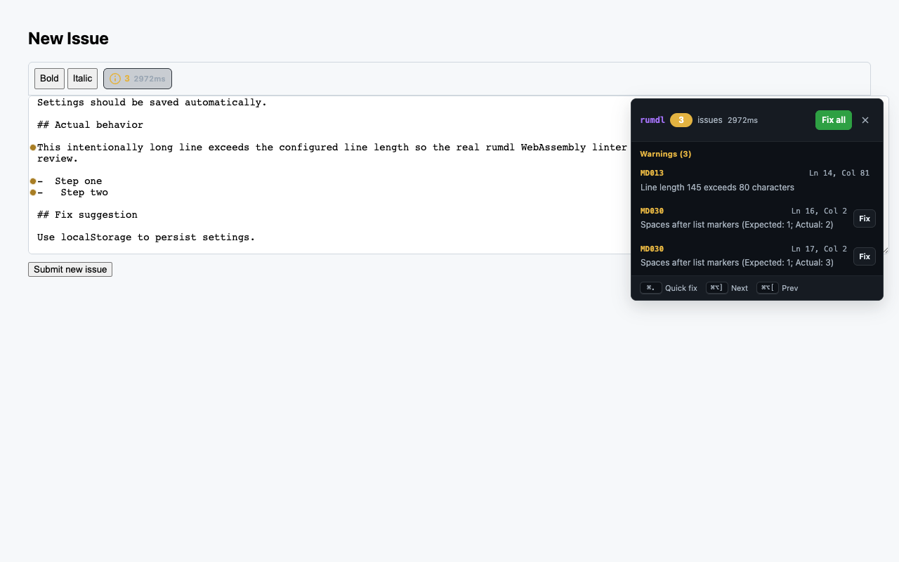
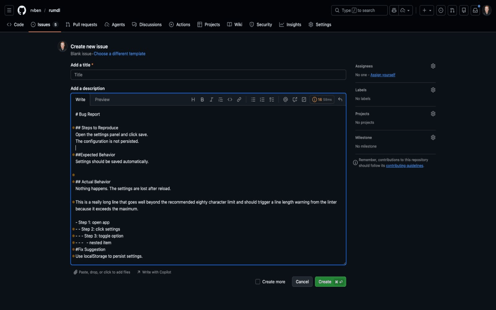
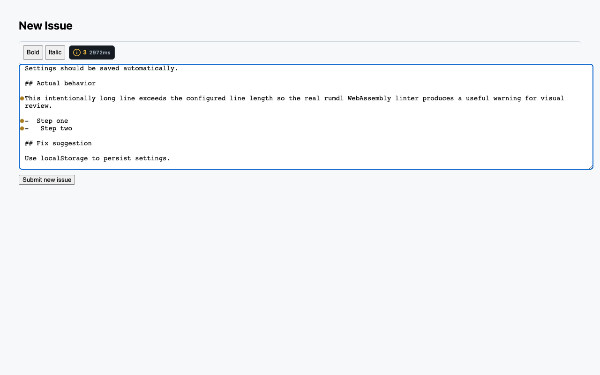
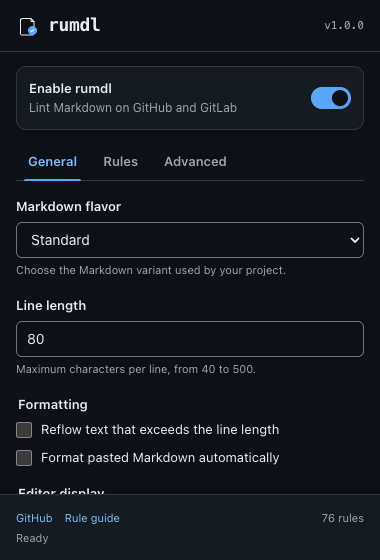
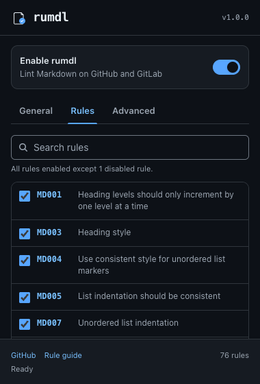

After: hidden, inert, and non-blocking with focus returned to its invoker.
46/50after review score
235/235unit tests passed
7/7real-extension tests passed
0known dependency vulnerabilities
01 / Warning panel
A smaller footprint with stronger behavior
The old panel was visually dense and could remain interactive after closing. The new panel is responsive, scoped, keyboard-operable, and removed from hit-testing and the accessibility tree when hidden.


02 / Gutter
Quiet until needed, reachable without a mouse
Markers remain deliberately compact, but they are now labelled native buttons with visible focus, keyboard tooltips, and Escape behavior.


03 / Popup
A settings surface that explains itself
The popup now uses one light/dark token system, a complete tab pattern, searchable effective rule state, expert disclosure, strict validation, platform shortcuts, and visible saving or recovery feedback.


04 / What changed
Behavior now matches the visual promise
After: native jump buttons, current state, and keyboard fixes.
After: clamped at open, resize, and scroll—even at 320×480.
After: truthful checkbox state, search, and Expert raw controls.
After: linting, saving, saved, stale, error, and retry states.
After: fixes apply only while the source text is unchanged.
05 / Verification
Tested through the actual extension boundary
Playwright launches Chromium with a temporary unpacked build, uses the real service worker and WebAssembly linter, and verifies popup storage and injected page behavior.
TypeScriptPass
Production buildPass
GitHub + GitLab detectionPass
Real lint outputPass
Keyboard + focusPass
Hidden hit-testingPass
Narrow viewport boundsPass
Popup tabs + storagePass